Our solution
One hub for every neighbor.
Urgent alerts come first.
A missing-neighbor alert sits above everything else, with one tap to join the search. The three hubs, Domestic Safety, Missing Persons and Food Pantry, are right below.

Ask for help in your own words.
The phone app puts the four most common needs on the home screen. The help request works in English, Spanish and Hmong, and no account is needed.


AI sorts it. A person handles it.
Before sending, the resident sees how the request was understood and can fix it. They get a private code to check on it later.
Anything urgent goes to a real person at ComForce right away.
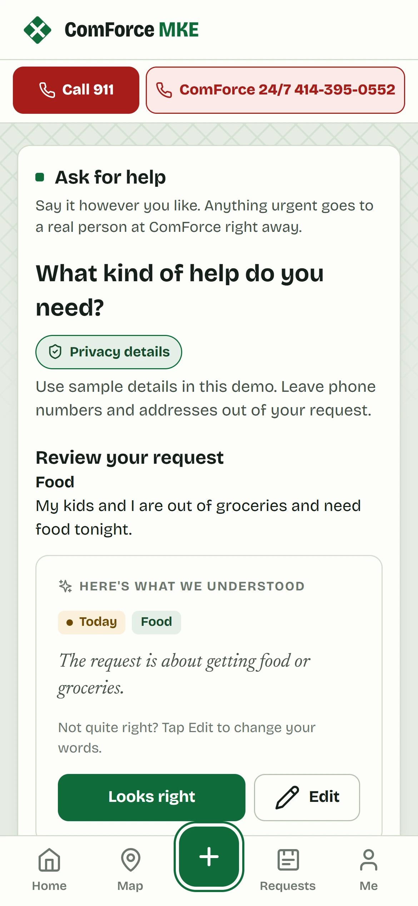
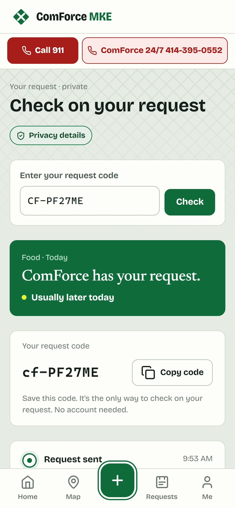
Get somewhere safe.
Verified safe places, food pantries and a lit walking corridor on one map. Filters show what's open now and what needs no ID.

Search parties, sector by sector.
Volunteers mark blocks as searching or cleared, so no street is walked twice. Distance rings from real case data show where to start.

A private forum in every hub.
Neighbors post under a pseudonym, and common questions get an answer automatically. Each hub also has its own tool, like the safe route or the search grid.
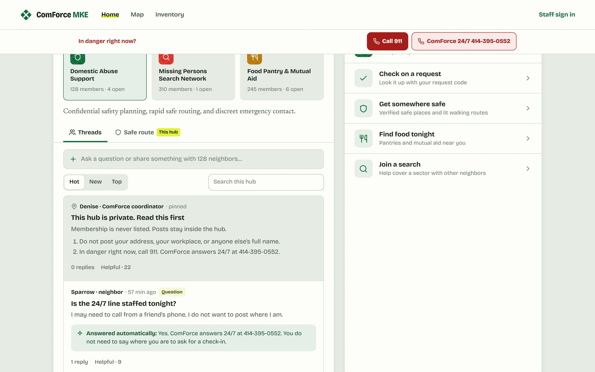
Neighbors take a request.
Volunteers claim nearby tasks, like packing pantry boxes or delivering groceries. They get the details privately and can hand a task back anytime.
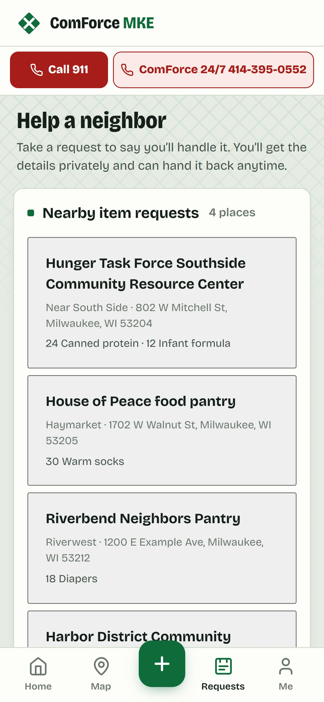
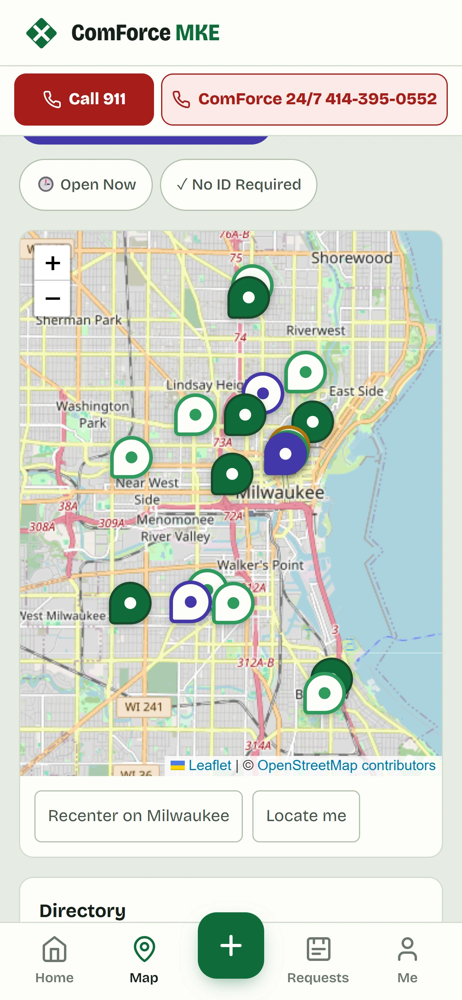
Tonight, across the district.
Coordinators see every request sorted by urgency. They can filter by neighborhood and assign volunteers from one queue.
AI sorts by urgency. The coordinator decides.
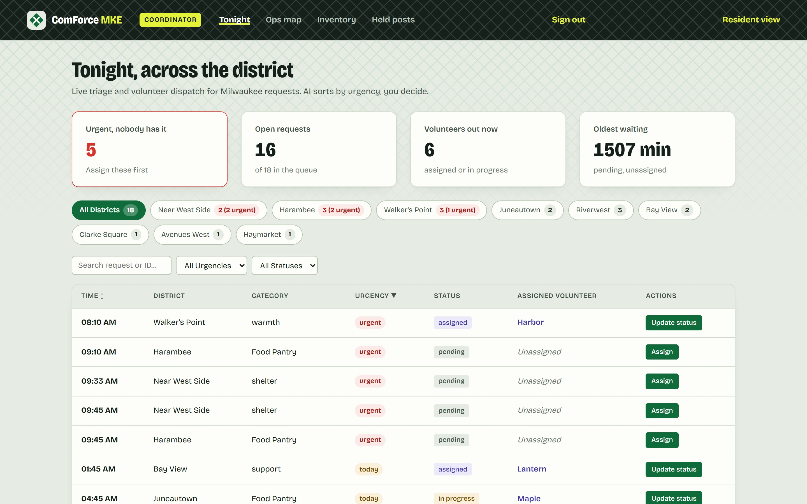
Contact details never go public.
A post with a phone number, address or email is held automatically. A coordinator publishes it with the details scrubbed out, or removes it.
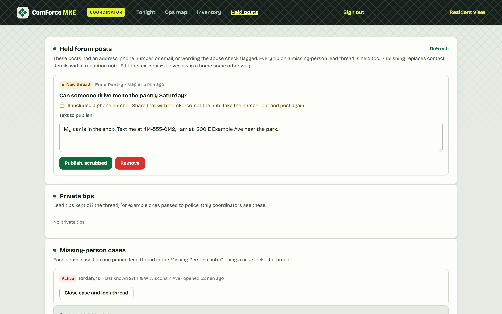
Mobile demo
A help request in Milwaukee.
- Open a community hubStart in Food Pantry & Mutual Aid.
- Ask for helpSend a private request and save the tracking code.
- Jev checks a hub postA demo verdict holds the related public post for staff review.
- Connect with ComForce staffA demo alert leads a volunteer to a demo task and the staff relay.
- Find a way to take part nearbyExplore Milwaukee’s resource map and join a demo search near 27th & Wisconsin.
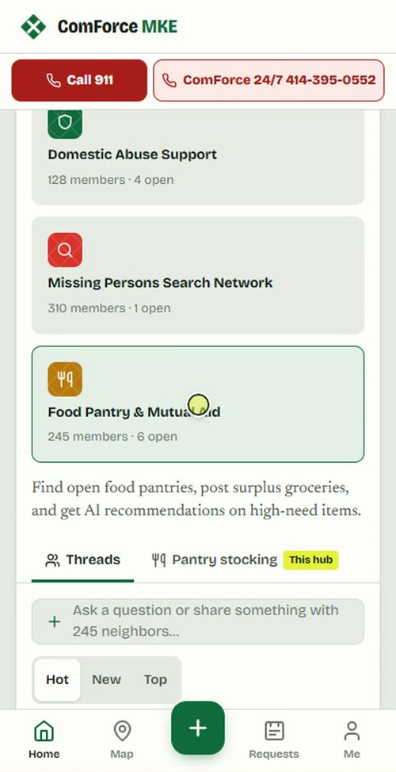


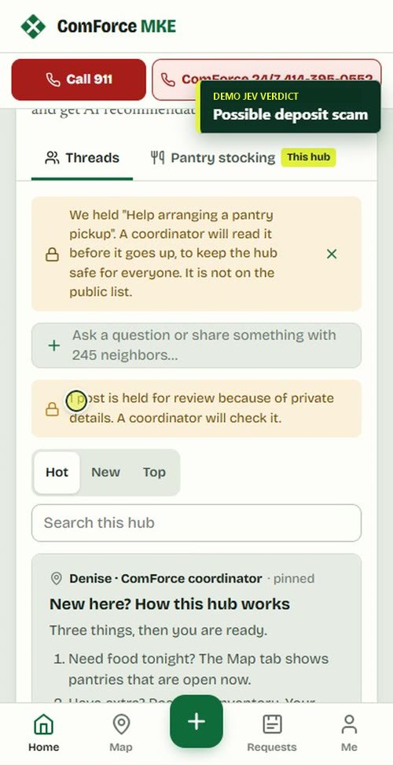
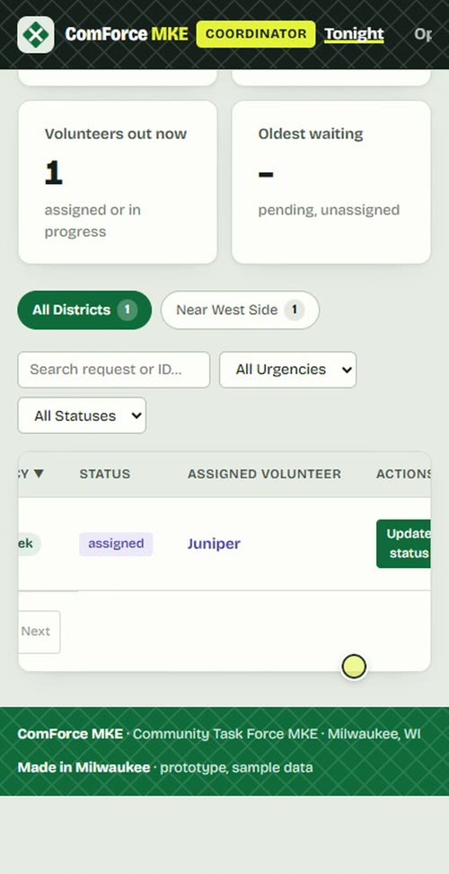

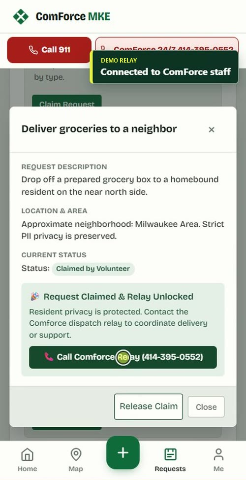

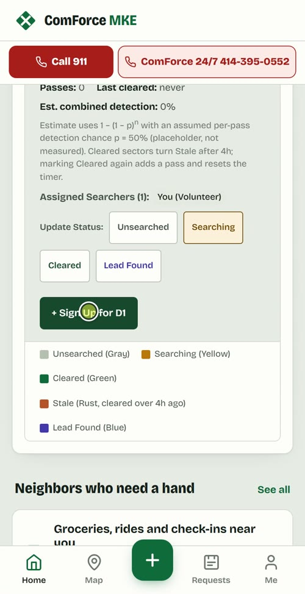